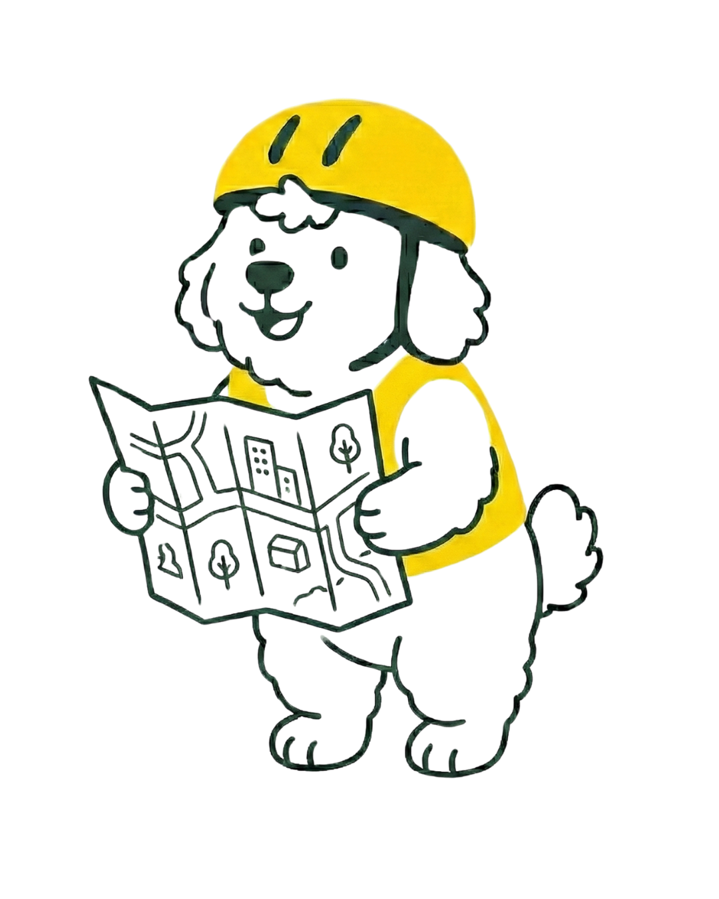
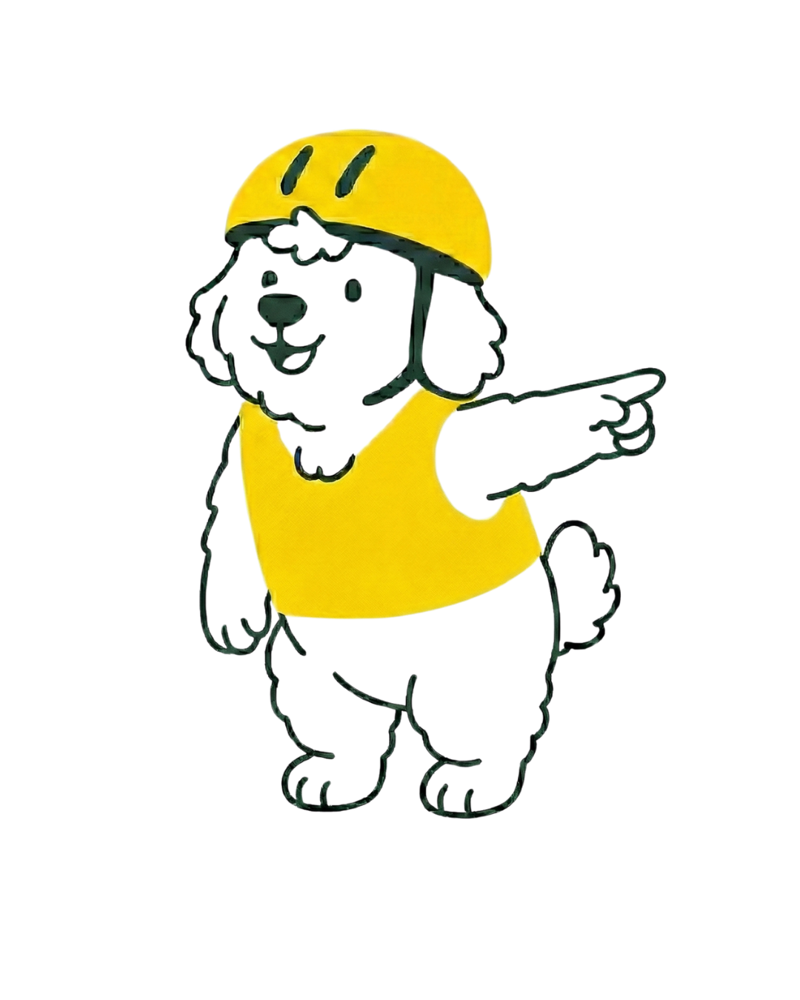

The risk-data layer for cycling.
234 million Europeans would cycle but fear being hit. Defensive Pedal routes them around the danger, and sells the risk map to the cities rebuilding their streets.
€300,000 SAFE · €2.3M cap · closing early 2027
Live in 31 European countries. 3,999 installs and €0 paid acquisition.

Despite money and determination, cities have the same problem.
Billions go into cycling infrastructure with no score for where it belongs.
High effort, high cost
Cities invest heavily in cycling networks, guided by intuition rather than a measured risk score.
Data is late
Crash data arrives years after the fact and is incomplete, so decisions are made in the dark.
Danger holds
In the decade to 2019, cyclist deaths fell 5% while overall road deaths fell 24%. Cycling is not getting safer.
Routes that carry half the risk, to the same place.
than Google Maps
A score-on-score comparison across 10,149 Romanian routes between random points. The crash-data test is below.

The score predicts serious injuries, tested on real crashes.
A continental risk layer, refined by its riders.
The score comes from open data and research; the app makes it current and sells it.
The target is set, the data is finally buildable, the market is unserved.
Every EU country must halve road deaths by 2030
A binding policy commitment, and cycling is the part that refuses to improve.
Buildable by one person in 2026
OpenStreetMap, open crash registers in five countries, LiDAR elevation and cheap compute made a continental risk layer possible.
Nobody sells where riding is dangerous
Strava raised at $2.2B in 2025 and gives cities ride counts free. Komoot sold to Bending Spoons. The risk layer is open.
Growing at AI speed, at €0 paid acquisition.
One founder. Every rider came through the app stores and the community, with nothing spent on acquisition.
A road-risk data company. The app refines the data and brings the buyers.
Validated on five national crash registers, so it sells without millions of riders. Riders add what registers cannot: today's hazards and the routes people actually take.
Cities & planners
Cities pay €45K–70K for one consultant audit of their network. Our algorithm automates it: a per-project license through masterplan consultancies, no tender, then a yearly license refreshed with rider data.
Insurers, OEMs, fleets
First insurer conversation opened October 2026: can street-level risk price cycling and e-bike cover. Not funded in this round; nothing in the plan depends on it.
Pedal Plus
€3.59 a month for shade routing, e-bike routing and unlimited saved routes. Safety routing stays free: free riders make the map. 229 subscribers would cover today's servers.
One paid programme, one national plan, one offer out.
World Bank programme
Risk maps and corridor analysis for three Romanian cities, delivered by the founder as a World Bank short-term consultant. We keep all rights to the algorithm.
Island Spatial Plan
The risk algorithm is used in the Island Spatial Plan for Cyprus, an EU Technical Support Instrument project (ref. REFORM/IM2025/17). First use at country scale.
Velo Masterplan offer
Written offer out for a city risk map and audit, €7,000 one-off, decision pending. The first sale into a real masterplan budget.
Three customers: riders, cities and their consultants, and businesses.
Riders
Europeans who cycle or would if it felt safe: the 'interested but concerned' share of Europe's urban population.
Cities, per year
About 1,000 European cities above 50,000 at €25K a year; €100M worldwide at 4,000 cities.
Location intelligence
The global location-intelligence market, growing 13–16% a year. Street-level cycling risk is a new slice.
Everyone routes bikes. Nobody else has crash-tested a risk score.
What can be copied: the app and a superficial score from open data. What cannot be shortcut: the 2,034-site exposure panel, a validation published with its negatives, and the rider data. Positioning from public pages, September 2026.
Cities through the people who write their plans; riders one dense city at a time.
Inside the plan, before the tender
- The 250-city risk index is the lead list: every ranked city gets its position and an audit offer.
- Sell through masterplan consultancies and funded programmes first: a per-project license needs no tender.
- Direct city audits follow the first contract, priced against the €45K–70K consultant version.
Density is the retention mechanism
- Bucharest first: riders are already there and the launch playbook has been run once.
- Then London, Berlin and Madrid, where riders ride year-round.
- Hazard alerts, community and leaderboards only work with enough riders per city. The launches test exactly that.
Victor built and validated the model. Oana is the rider it is built for.
Victor Rotariu, CEO & CTO. Full-time, unpaid; the round pays him. Built the product, the 67.8M-segment model and the five-register validation. World Bank short-term consultant on cycling-safety intelligence, with 18 years in strategy and innovation.
Oana Leta, CMO & Partnerships. Full-time from month 2. Six years in marketing and business, UK Country Manager at iRobot. Owns the city launches and local-authority relationships. Does not cycle in traffic because she is afraid to: the rider it is built for.
Gaps we name: no engineer on payroll (fractional CTO, two days a week, from month 2); no public-procurement experience (advisor to recruit).
The risk-data layer for all human mobility in Europe and the US.
Riders ride on it. Cities buy it.
€300,000 SAFE. €2.3M cap. Closing early 2027.
Eighteen months and four things.
Fractional CTO; founders sell
1,000 paying subscribers
Three paid cities
Marketing & sales for B2C and B2B
Detailed budget and milestones available on request.